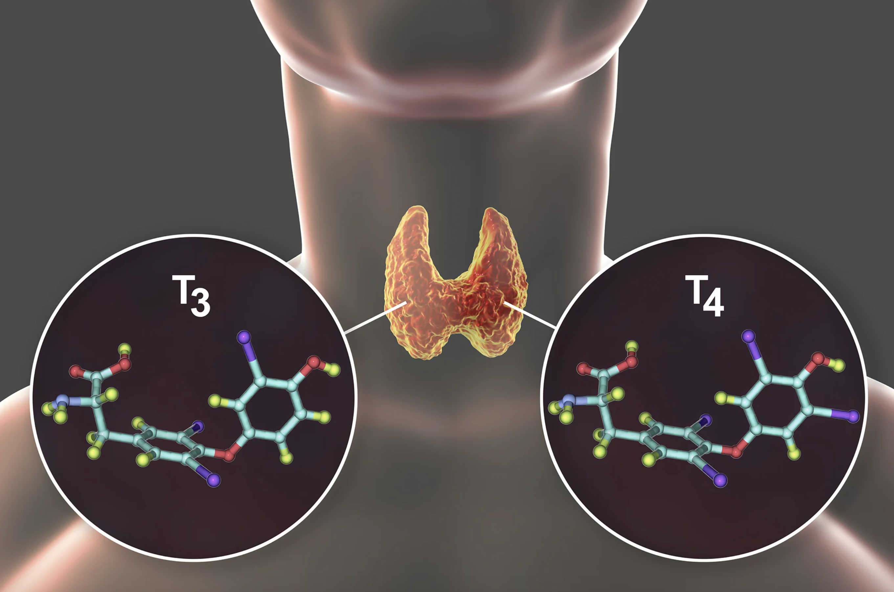
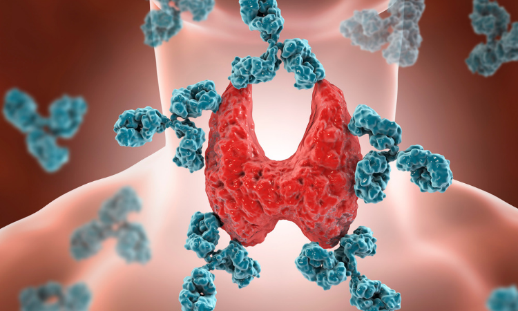
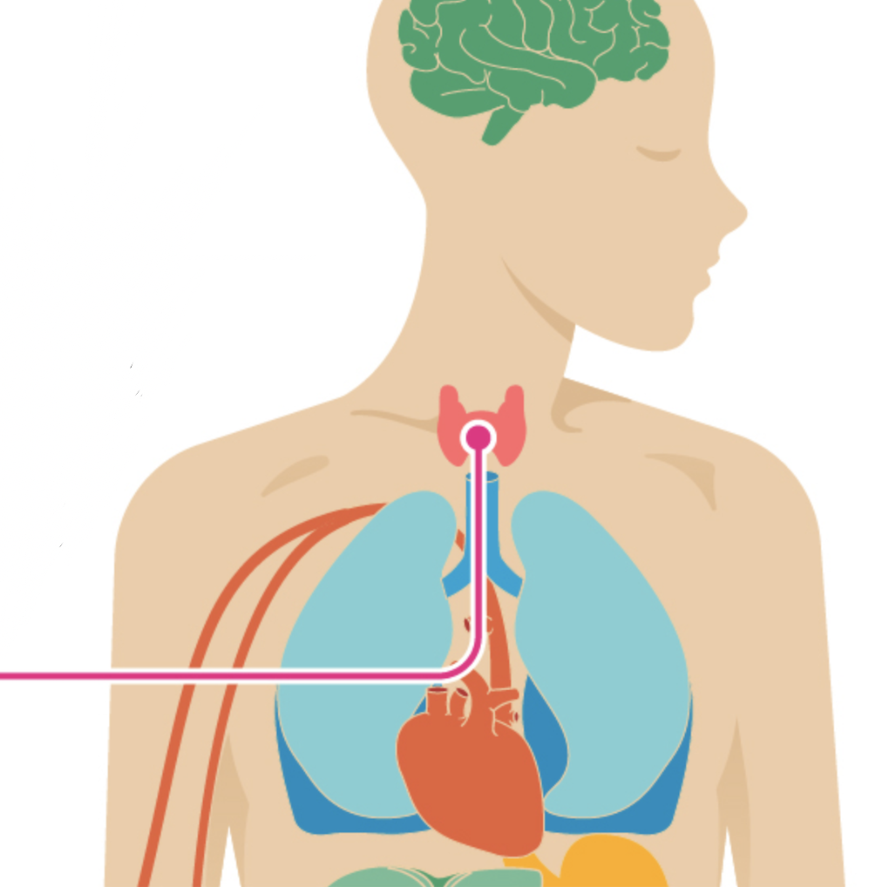
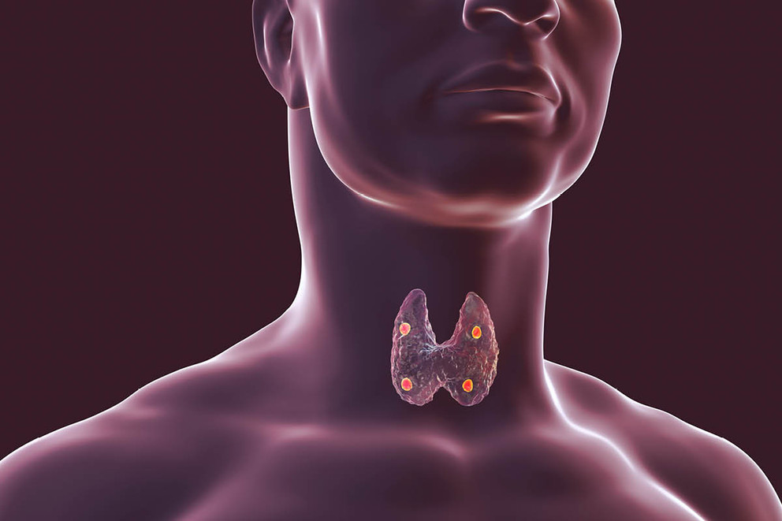
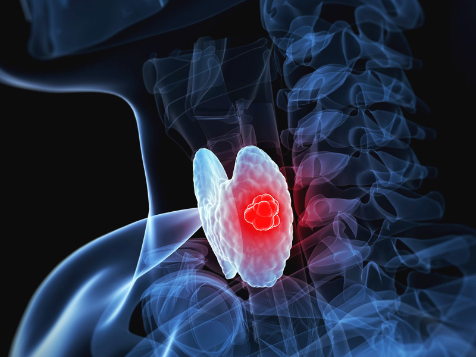

Science of the thyroid
The thyroid gland uses iodine from the food we eat to produce 2 vital hormones. One of these vital hormones is called Thyroxine, also known as T4. It is the primary hormone produced by the gland. After T4 is produced by the gland, there is a delivery made via the bloodstream to the body's tissues in which a small portion of the T4 is released from the gland and is converted to triiodothyronine(T3) which is the most active hormone. It is very important that T3 and T4 levels are neither too high or too low which is why there are two glands in the brain, the hypothalamus and the pituitary, which communicate with the brain to maintain T3 and T4 balanced. T3 and T4 regulate your heart rate and how fast your intestines process the food that you eat so both hormones are very important.
Thyroid Disorders: Hyperthyroidism
What happens if there is an overproduction of T3 and T4 in your body?
When you have an overproduction of the hormone thyroxine (T4) in your body it is called hyperthyroidism. In hyperthyroidism,your body will speed up your metabolism, which may cause you to feel very energetic at first, but later on will break your body down and cause you to feel really tired or other unpleasant symptoms.
Symptoms
What causes Hyperthyroidism?
One of the most common causes of hyperthyroidism is the autoimmune disorder called Graves’ disease. With this disease, the body makes an antibody thyroid-stimulating immunoglobulin (TSI) which causes the thyroid gland produce too much thyroid hormone. Hyperthyroidism can also be caused by a toxic nodular or multinodular goiter. These are lumps or nodules in the thyroid gland that cause hyperthyroidism. Furthermore, thyroiditis (An inflammation of the thyroid) can also result from a virus or a problem with the immune system and eventually cause the person to have symptoms related to hyperthyroidism.
Treatment
Medications that are antithyroid can prevent the thyroid gland from producing excess amounts of T4 and T3 hormones. There are two types of antithyroid medications. These medications are called propylthiouracil (PTU) and methimazole (also known as Tapazole).These 2 medications are made to directly target the thyroid gland and to reduce T4 and T3 hormone production.
Thyroid Disorders: Hypothyroidism
What happens if there is too little of T3 and T4 in your body?
When your thyroid gland doesn’t produce enough thyroid hormone, it is called hypothyroidism. If our thyroid gland does not produce enough thyroid hormone, it can disrupt your metabolism. Metabolism is how your body’s cell uses energy from the food you eat. Our metabolism is associated with your heart rate, body temperature, buildup and breakdown of substances, elimination of waste, and all aspects of metabolism.
Symptoms
What causes Hypothyroidism?
Like any other disease, there are many factors that can cause someone to have this type of disease. Some people have an autoimmune disease which is caused when the immune system protects the body from invading infections like a virus, but mistakes thyroid gland cells and their enzymes for invaders and attacks them as well. This leads to not enough thyroid cells and enzymes left to make enough thyroid hormones. Hypothyroidism is more common in women than in men. Like mentioned before, thyroiditis is usually caused by a viral infection or autoimmune attack which causes the thyroid gland to become inflamed and lead to a thyroid complication.
Treatment
The treatment for hypothyroidism includes daily use of a medication known as levothyroxine which restores adequate hormone levels. It will then reverse the signs and symptoms of hypothyroidism. However, if a person leaves it untreated, hypothyroidism can devlop and get worse after years and lead to several complications like heart problems, nerve injury, infertility, and even a coma.
Graves' Disease

Graves' disease is an immune symptom disorder and one of the factors that often leads to hyperthyroidism. Grave' disease causes the immune system to make more antibodies which eventually leads to an overproduction of thyroid-hormone (hyperthyroidism). Graves' diseases is most common in women who are age 40 and below.
Symptoms
Treatment
Treatment goals aim to inhibit the overproduction of thyroid hormones and lessen the severity of symptoms. Propranolol is a beta blocker that slows the heart rate and decreases the blood pressure. When taken in eye-drop form, it helps reduce eye pressure.
Goiter's Disease
Goiter's disease is an unusual enlargement of the thyroid gland. Since they cause an enlarged thyroid gland, it can cause one to cough and make it difficult for a person to swallow or even breath. The most common cause of this disease is the lack of iodine or iodine deficiency, but what is iodine?
Iodine is a mineral found in foods just like protein and zinc. Iodine is necessary in order to make thyroid hormones which then control the body's metabolism and many other important functions. The body especially needs iodine for proper bone and brain development during women's pregnancy and infancy. Since iodine is so essential to the body, if the thyroid doesn't have enough iodine, it will develop goiters which causes the thyroid gland to enlarge in an effort to obtain more iodine.
Symptoms
Treatment
There are certain medications prescribed for when people have an underactive thyroid or overactive thyroid. Antithyroid agents prevent the thyroid gland from making or releasing thyroid hormone. For instance, levothyroxine can help treat hypothyroidism, an enlarged thyroid gland and thyroid cancer. While thiamazole and propylthiouracil are both medications for hyperthyroidism.
Thyroid Cancer
Thyroid cancer can occur more often in women than in men. Being exposed to high levels of radiation can lead to an increase of risk of developing thyroid cancer. At first, there might not be any symptoms present, but as the tumor grows, eventually it can cause pain and swelling in the neck. There are several types of thyroid cancer that can exist.
Types of Thyroid Cancer:
Symptoms
As the tumor grows, some symptoms will begin to be present. A lump may be felt through the skin on the neck. There can also be changes to the person’s voice. Difficulty when swallowing. Pain in the neck and throat.Treatment
Thankfully, most thyroid cancers can be cured with the necessary and appropriate treatment. The treatment depends on the type and stage of the thyroid cancer you have. Recommendations: Your doctor might need to take blood tests and ultrasound exams of your thyroid once or twice per year. It varies for everyone who is diagnosed with a type of thyroid cancer. For some, the cancer might never grow and never require any type of treatment, but for others the cancer might grow and some type of treatment would be necessary.Call To Action
Our thyroid may not be visible to our eye, but it is in fact, a major and vital hormone gland in the human body. We should be more aware of this gland since it's not really taught about it in school. Another reason might be because 60% of Americans who have a type of thyroid disease don't even know it! So taking the right medication and one's positivity could help someone get better and fight a type of thyroid disease.